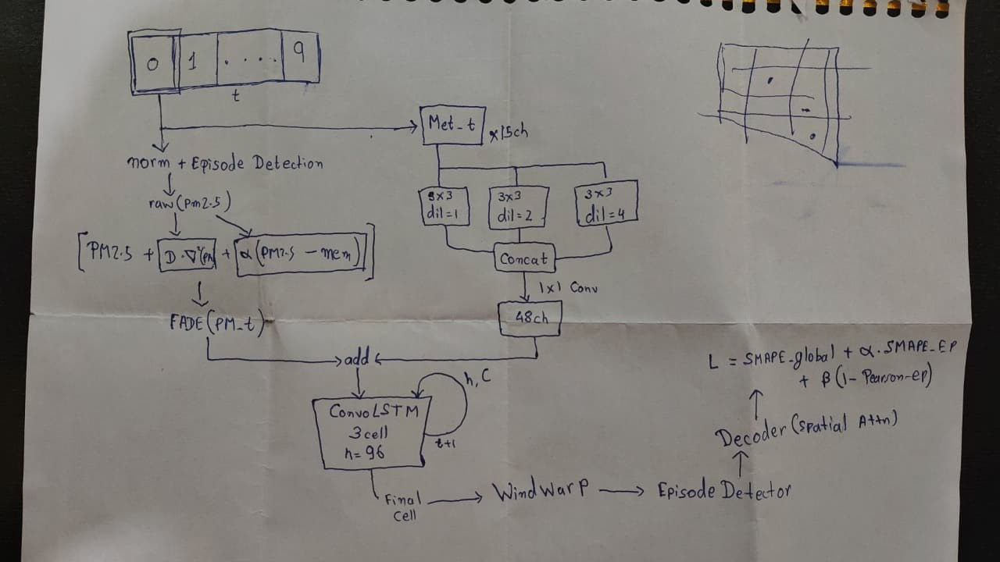
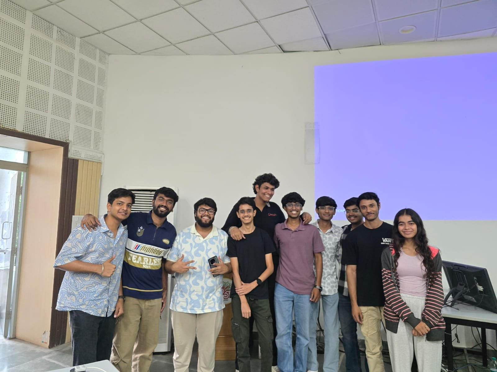

Team achievement · April 2026
AISEHack 2026
First place in the Pollution Forecasting track at AISEHack 2026.
The problem and outcome
The task was to forecast PM2.5 concentrations using meteorological and emission information. VibeCoders won first place in the Pollution Forecasting track at the event held at IIIT Hyderabad on 4–5 April 2026.
The official archive identifies the team and lists Pranav Mundhra as its lead.
It was the first edition of AISEHack, with 50+ finalist teams across the flood-detection and pollution-forecasting tracks and the top three placed in each. The official results list placings, not scores, so I don't quote one here; the team's submission report and slides carry the detail.
My contribution
I led VibeCoders and proposed and integrated FADE, the Fractional Advection–Diffusion Equation, which models how particles move through air, into the team's pollution-forecasting model. We worked through FADE and the wind-warp component together during an overnight brainstorm.
Team and approach
VibeCoders: Pranav Mundhra, Kartik Soni, Meet Patel, Mohammad Saad Nathani, and Anushka Sharma.
The model forecasts PM2.5 across India 16 hours ahead on a 140×124 grid, using a ConvLSTM encoder–decoder with physics-informed wind warping, because pollution moves with the wind.
The input is ten hours of history with 15 meteorological and emission variables. The team's base ConvLSTM (three layers, hidden size 96) trained for 20 epochs in about 10 hours on a single Tesla T4, and its loss combines episode-weighted and global SMAPE with a spatial-gradient and a correlation term.
The architecture, as sketched at the hackathon
This rough hand-drawn diagram is how we presented the model at the hackathon. One of the most memorable moments for me was watching Sri Harsha Kota spot a limitation in our architecture from this sketch at a glance: the model forecasts PM2.5 on its own and does not model the chemical reactions between pollutants. That was a deliberate scope choice, since the hackathon's objective was PM2.5.

Reading the sketch from the top:
- Input: a window of ten time steps (0 to 9).
- PM2.5 branch: the PM2.5 field is normalised and passed through episode detection. FADE then combines the raw PM2.5 with a spatial-gradient term and a memory term, α·(PM2.5 − mem).
- Meteorology branch: 15 meteorological channels go through three parallel 3×3 convolutions with dilations 1, 2 and 4. The outputs are concatenated and reduced by a 1×1 convolution to 48 channels.
- Fusion: the two branches are added and fed to a three-cell ConvLSTM with hidden size 96.
- Output: the final cell state goes through wind warp and an episode detector, then a decoder with spatial attention.
- Loss: global SMAPE, plus an episode-focused SMAPE term weighted by α, plus a Pearson-correlation term weighted by β.
The experience
It was a sleepless night of intense brainstorming, wrapping our heads around Windwarp and FADE, and a chance to learn from some of the brightest minds. We interacted with researchers and mentors including Rahul Sundar and Siddharthan Dileep, and seeing a limitation in our design picked out from a rough sketch was a lesson in how experienced researchers read a model.

Thank you to the Anusandhan National Research Foundation (ANRF), the Indian Institute of Technology Delhi, Ponnurangam Kumaraguru (PK), and E-Cell IIIT Hyderabad for organising the event, and to my teammates Meet Patel, Mohammad Saad Nathani, Kartik Soni, and Anushka Sharma.